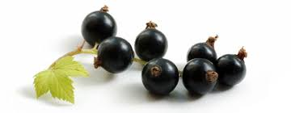

Blackcurrant
As well as high levels of Vitamin C and other antioxidants, blackcurrants contain soluble and insoluble fibre as well as important carbohydrates to give you energy. Soluble fibre helps to slow down the release of nutrients, particularly glucose, into the blood stream, which is healthier for the body. Find yourself slumping at your desk mid-afternoon? Try swapping your energy drink for a fruity blackcurrant tea. Rich in anti-oxidants, research has shown that blackcurrant extract can help people stay more alert, reduce mental fatigue and even work with greater accuracy while under significant mental stress. Black currant doesn't only tastes great, it may offer many great health benefits such as regulating blood pressure, increasing fat oxidation and promoting skin health. A black currant is a diminutive fruit that packs a big nutritional punch in a small package. Each dried berry in Tea Forté’s black currant tea blends contains a dose of antioxidants believed to reduce cancer-causing free radicals in the human body. A cup of tea made with this vibrant ingredient delivers a generous serving of vitamin C that may stave off colds and infections. Black currant also provides a serving of blood-building iron, as well as plenty of eye-protective vitamin A and gamma-linolenic acid (GLA), which may boost the effectiveness of the human immune system.
Blackcurrants crop best in a sunny location but will also do well in light shade. Blackcurrants are easy to grow, producing a delicious summer harvest with little upkeep required.
Peppermint

Peppermint, a popular flavoring for gum, toothpaste, and tea, is also used to soothe an upset stomach or to aid digestion. It has a calming and numbing effect, and is often used to treat headaches, skin irritation, nausea, diarrhea, menstrual cramps, flatulence, and anxiety associated with depression. Peppermint tea is rich in antioxidants, there are lots of other benefits of peppermint tea too - ability to calm anxiety and relieve digestive discomfort, both of which can make it much easier to fall asleep as well. Enjoy a cup of peppermint tea about an hour before bed to soothe yourself into sleep.
Peppermint thrives in most soil types, in sun or light shade, and usually forms large leafy clumps up to 1m (3.3ft) tall and wide. Most mints are vigorous, spreading plants, so are best grown in large pots or in bottomless buckets sunk into the ground, to keep their roots contained.The best time to harvest mint leaves is right before flowers appear, usually midway through the growing season. However, you can start collecting individual leaves as soon as the plants reach at least 4 inches in height. For fresh use, pick green leaves from the plant as required.
Ginger

It's known for adding flavor to cooking recipes, but it also offers several health benefits. Numerous studies have found that ginger can help improve blood sugar levels, reduce inflammation, relieve pain, strengthen the immune system, and treat nausea and indigestion. Brewing a cup of hot ginger tea is also effective when you are suffering from fever. To make the tea, add half-teaspoon minced ginger root in 1 cup of boiled water. Strain it and then drink. Ginger has been shown to be a safe, natural, and effective way of reducing nausea for many people. Before using ginger for medicinal purposes however, talk to your doctor. Common side effects of ginger may include: Mild heartburn. A cup of ginger tea can help to increase concentration and focus and increase energy. While ginger has been used to boost brainpower in herbal medicine for hundreds of years, recent studies have shown that ginger's cognitive benefits are backed by scientific evidence.
Sage
Background. Sage has a long history of use as a spice and for health purposes. It was used as a traditional herbal remedy in ancient Greece and Rome, as well as in Native American and Chinese medicine. Today, sage is promoted for sore mouth or throat, memory loss, diabetes, high cholesterol levels, and other conditions. Sage has several types of acidic compounds that also act as antioxidants. Chlorogenic acid, caffeic acid, rosmarinic acid, ellagic acid, and rutin have all been linked to benefits such as lower cancer risk, memory improvement, and improved brain function. Several types of research conclude that people taking sage regularly, have improved memory, reasoning, problem-solving, and other cognitive abilities. Hence, it can be considered as a brain booster and is extremely beneficial in treating psychotic conditions and ailments like Alzheimer's disease.
Rosemary
Rosemary has been used in folk medicine to alleviate several diseases including headache, dysmenorrhea, stomachache, epilepsy, rheumatic pain, spasms, nervous agitation, improvement of memory, hysteria, depression, as well as physical and mental fatigue. Rosemary has significant antimicrobial, anti-inflammatory, anti-oxidant, anti-apoptotic, anti-tumorigenic, antinociceptive, and neuroprotective properties. Furthermore, it shows important clinical effects on mood, learning, memory, pain, anxiety, and sleep.
Rosemary is a large, shrubby herb that is normally grown outdoors, but potted plants can be grown indoors if you give them some special tending and attention. Rosemary thrives on lots of light and a precise watering cadence that ensures its loamy soil stays well-hydrated without getting waterlogged.
Turmeric
Both animal and human studies have found that curcumin (turmeric is a plant and it's the roots of the plant that are used to make the spice that is used in cooking and herbal drinks. Curcumin is the naturally occurring compound within the plant's roots that give it it's bright yellow colour and is known as a carotenoid compound. It is also a very strong antioxidant.) may increase brain levels of BDNF. By doing this, it may be effective in delaying or even reversing many brain diseases and age-related decreases in brain function. It may also help improve memory and attention, which seems logical given its effects on BDNF levels. It contains an active compound, curcumin, that has antioxidant and anti-inflammatory properties. Research has found that curcumin has the potential to improve a number of health conditions — including depression. This includes mild depression and even major depressive disorder (MDD). Today, turmeric is promoted as a dietary supplement for a variety of conditions, including arthritis, digestive disorders, respiratory infections, allergies, liver disease, and many others.
With the unpredictable nature of UK weather, we recommend growing turmeric root indoors as it will not survive if temperatures drop below 10°C. If you're planting them inside, then they won't need any light until you start seeing some sprouts, so don't worry about natural light for the first few months.